In CFT, we are working on infinite dimensional representations of the conformal group, as this group is not compact and therefore can’t admit finite unitary representations.
Working in euclidian signature SO(d+1,1), the claim is that highest weight representations in this signature become unitary representations of SO(d,2). Note that they can’t both be unitary. Think of it this way:
tE=−itM
in order to preserve rotation invariance in scalars, the rotation needs to change accordingly. The unitarity in Minkowski signature is guaranteed by the Osterwalder-Schrader reconstruction theorem, reported here too:
Osterwalder-Schrader reconstruction theorem
Osterwalder-Schrader reconstruction theorem
If we have a Minkowski theory which is an analytical continuation of a euclidian one:
Euclidian th. ⟷analytical cont. Minkowski th.
Then, the Minkowski theory is unitary if the euclidian one is reflection positive
We define a reflection Θ in our euclidian theory in the cylindrical picture.
We select the reflection to be the τ inversion:

In the corresponding radial picture, we are sending r↦1/r.
So, in order to have a unitary theory in Minkowski, we need that, in Euclidean signature, the following is satisfied:
⟨I(ψ),ψ⟩>0∀ψ
How do we verify that this condition is consistent with conformal algebra? Take a primarystate∣ψP⟩, then:
Assume that ⟨I(ψP),ψP⟩>0
We verify that the first descendant satisfies the condition
⟨I(PμψP),PνψP⟩≽0
here the condition is in the sense of positive semi-definiteness. This tool can be used to impose bounds on the dimensionality of primaries.
Info
We are basically redefining the dual states. In normal quantum mechanics, those are the ‘dagger’ states, while here we need to perform the radial inversion.
Representation theory approach
Basically we want to compare
SO(d+1,1)vsSO(d,2)
Let us use the encoding through the object JAB:
[JAB,JCD]=ηACJBD−ηBCJAD−ηADJBC+ηACJBD
where the flat metric is:
ηAB=−1−11⋱1
with: A,B,C,D=−1,0,...,d and greek letters going from 0 to d−1, which identify the Lorentz group:

In Minkowski unitarity implies:
[JAB]†=±JAB
with the identification:
Mμν=JμνD=J−1,d2Pμ−Kμ=Jμ,d2Pμ+Kμ=Jμ,−1
In order to get to Euclidean, we need to analytically continue the (0,0) component; in Euclidean, we have:
A,B,...=−1,0,...,da,b,...=1,...,d
The rotations (corresponding to Lorentz) act on the a,b indices:

So that the euclidean rotations are a mixture of rotations, sct’s and momenta from Minkowski
MabE=Jab←mixture of SO(d−1) rotations in Mink. and P,K
while the dilation operator becomes:
DE=iJ−1,0←P0+K0
this is sometimes called conformal hamiltonian. Momenta and sct’s become:
PaE=Ja,−1+iJa,0KaE=Ja,−1+iJa,0
The claim is that these Euclidean generators satisfy the conformal algebra.
Now P,K behave like ladder operators
The cylinder is R×Sd−1. In order to pass from euclidian to Minkowski we need to perform a Wick rotation of τ. When we do that (see Covering space) we end up in:
A generic transformation in Euclidean is written as:
e21θABJAB
So, unitarity in Euclidean means:
[JAB]†=−JAB
We also have the “Minkowski-inherited” unitarity condition we found earlier (i.e. what guarantees unitarity once we go back to minkowski), which would be
K†=P
Both need to be satisfied. Let’s discuss the first, introduce the operators:
L0:=iJ−1,0=−2i(P+K)L±:=−2i(P−K)∓D
Their algebra is:
[L0,L±]=±L±[L−,L+]=2L0L−†=L+
Let us consider an irrep and the action of the quadratic Casimir on its states.
Define a Δ∈C so that it satisfies.
C2∣ψ⟩=Δ(1−Δ)∣ψ⟩
Note that Δ(1−Δ) must be real.
We build the representation starting from a state ∣Δ,n⟩ s.t.: